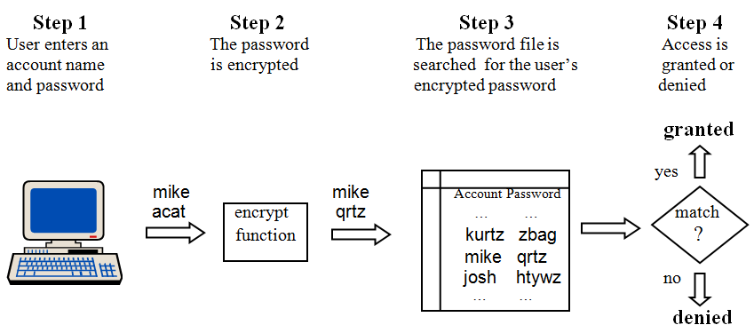

Online security is most frequently addressed by password protection.
Most online services – from Facebook, YouTube, and Gmail, to eBay, Amazon, and iTunes – require that each individual who is authorized to use the service have a unique “user account” and password. Accounts are usually identified by some “account name”, which may be based on the user’s real name or initials (in the case of email addresses), or some preferred “online nickname”.
Because account names are often public in nature, there must be some way of protecting the accounts from unauthorized access. This is usually accomplished with a private password for each account, known only to the account’s owner. When someone attempts to log in to an online service, the computer system underlying that service requests two pieces of information – the account name and matching password. Without the matching password the system will not give access to the specified account.
In order for a computer system to be able to match an account name with the appropriate password, the system needs a record of which passwords go with which accounts. This information is usually stored in a “password file”. Whenever an individual attempts to log on to the system, the password file is accessed in order to verify that a valid account name and password were entered.
The existence of a password file, while necessary, presents a potential security weakness. The password file is a “high value” target for would-be hackers, as it holds, in some sense, the “keys” to all of the accounts maintained by the system.
Surprisingly, even if a hacker manages to get his or her hands on the password file, he or she does not automatically obtain access to all of the end-user accounts on the system. The reason for this is that passwords are almost always encrypted. Encryption systems store messages in a secret code. Password files generally consist of account names together with an encrypted version of the associated password. When a user types in his or her password, the computer system immediately encrypts that password (using standard encryption algorithms such as SHA1, DES, and MD5) and then compares the encrypted version of the just-typed password against the encrypted password stored in the password file. If the encrypted version of what the user typed matches the encrypted password from the file, the user is given access to the account.
The password verification process
illustrates password verification as a four-step process. First, a user enters his or her account name and password. In the example, the account name is assumed to be “mike” and the password “acat”.[1] In the second step the password, but not the account name, is encrypted. In , “acat” is converted to “qrtz” by the encryption function. Next, the password file is searched to determine the encrypted password that is on record as matching account “mike”. According to that password is “qrtz”. In the final step the two encrypted passwords are compared. If they match, access to the account is granted. If they do not match, access to the account is denied. In our example, the password file entry for “mike”, “qrtz”, does match the encrypted version of the entered password, so access to the account is granted.
What would-be hackers intent on stealing a system’s password file soon discover is that having a copy of the password file does not in and of itself give them access to the end-user accounts. The password file contains encrypted passwords but the computer system requires that an unencrypted password be entered to gain access to an account. If someone were to steal the password file of , they would learn that my encrypted password is “qrtz”. Let’s say they tried to use this information to hack my account by typing in my account name “mike” and the password “qrtz”. The system will treat “qrtz” just like any other password and thus encrypt it – producing a different stream of characters, perhaps “xpyq”. When the system compares the (doubly) encrypted password, “xpyq”, to the encrypted password stored in the password file, “qrtz”, they will not match and access to the account will be denied. Since there is no way to force the system to skip the password encryption phase of the log in process, knowing the encrypted version of the password does not crack the account.
Step 1 – Prepare a “hacker’s dictionary” that consists of every word in the English language in both encrypted and unencrypted form. This is accomplished by running every conceivable English word through the password encryption program of the system to be hacked and storing both the original input word and the encrypted output word in a table.
Step 2 – Obtain a copy of the password file for the system you wish to hack. This is often not as hard to do as one might think.
Step 3 – Scan through your copy of the password file, comparing each encrypted password to every encrypted word in your hacker’s dictionary. Every time you find an encrypted password that also appears in your hacker’s dictionary, retrieve its unencrypted version.
Step 4 – At the end of this process you will have the account names and unencrypted passwords for all accounts that used simple English words as their passwords.
Step 5 – Plunder.
The “Classic” Dictionary Hack
Encryption systems exist today that make it virtually impossible to directly figure out what the original password was given the encoded password. These systems are based on what are called “one way” functions – functions that are easy to compute but whose inverse is extremely difficult to compute. In other words, given a reasonably long input word, such as a ten character password, these systems can quickly encrypt that word. But, given the encrypted version of the word, determining the original word may take hundreds or thousands of years on the fastest computers.
While these “one way” functions do provide some protection, because they make it nearly impossible to derive the original unencrypted password from its encrypted form, there is, unfortunately, a “back door” approach that renders many, if not most, end-user accounts highly susceptible to hacking. The attack is based on an observation – humans are not very good at coming up with passwords. When asked to define a password for a new account we don’t tend to generate (and remember) random strings of characters, instead we tend to use common words, phrases, and names for our passwords. Worse still we tend to use the same password for multiple accounts. Hackers can exploit this human weakness by encrypting every word in the English language one at a time and storing both the original word and its encrypted version in a “hacker’s dictionary”.
Assuming a hacker has obtained a copy a system’s password file, once that hacker has access to a hacker’s dictionary breaking into accounts that are protected by dictionary words is easy. The program retrieves the account name and encrypted password from the password file; it then looks up the associated unencrypted version of the password in its dictionary. If the encrypted password appears in the hacker’s dictionary, the associated unencrypted word is returned. At this point, the program has both the account name and original password – hence, it has complete access to the account and all of the user’s files. It could make copies of the user’s files or even delete all of his or her data.
The “dictionary hack” procedure is summarized in . These details are not presented to encourage hacking, but are instead included in this text so that the naïve user can gain insight into the methods used by hackers and thereby better protect themselves from attack.
The only way of protecting against this sort of attack is to be sure that your password is does not consist of any word that could be looked up in a dictionary. Additionally, try to avoid phrases composed of common words. It is critical that your password be as long as possible – I recommend at least 10 characters.[2] It is also a good idea to incorporate some digits and special characters (such as: ! @ # $ % ^ & *) into your password.
With each passing year, password hacking techniques become more and more sophisticated, the “coverage” of hacker dictionaries become more complete, and the hardware they crack with becomes faster. Thus, a decade ago using a six or eight character password consisting of a common word followed by a three digit number might have provided sufficient protection, but today such a password provides very little protection.
Footnotes
[1] The password and account given here are for illustration purposes only. In reality you should never use a password that has fewer than 10 characters.
[2] The difficulty of cracking your password increases exponentially with the number of characters. Thus a 10 character password might be nearly 100 times more difficult to crack than a 9 character password and 10,000 times more difficult to crack than an 8 character password.